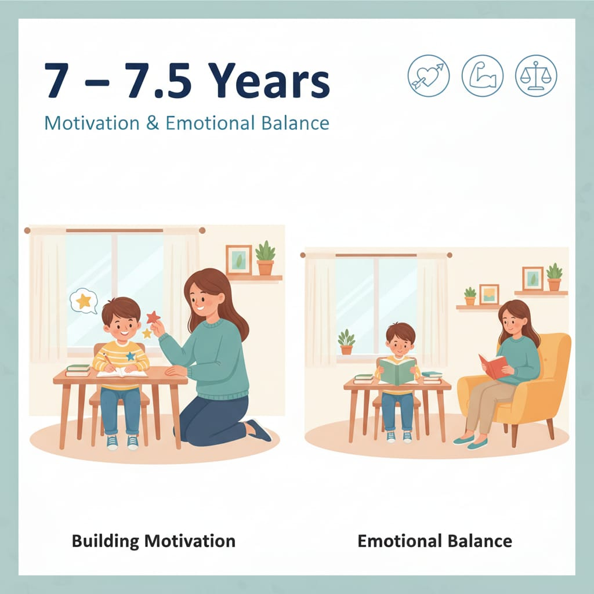

7 – 7.5 سنوات
في المرحلة دي الطفل يبدأ يعتمد أكتر على التقييم الخارجي (درجات – رأي المدرس – مقارنة بزمايله). لازم نبني دافعية داخلية مش بس خوف من العقاب أو رغبة في المكافأة.

مهم: الطفل هنا يتشكل عنده تصور عن نفسه: "أنا شاطر" أو
"أنا فاشل". طريقة تعاملنا مع الأخطاء هتحدد الصورة دي.